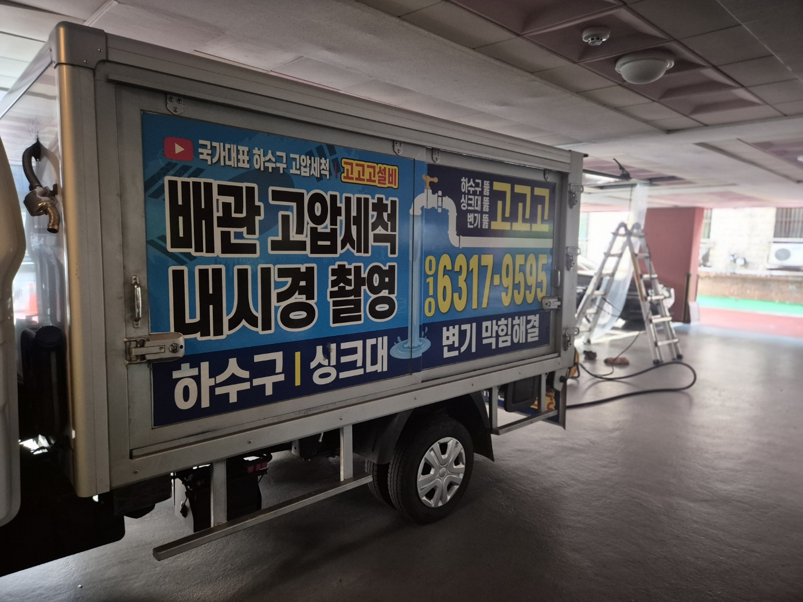
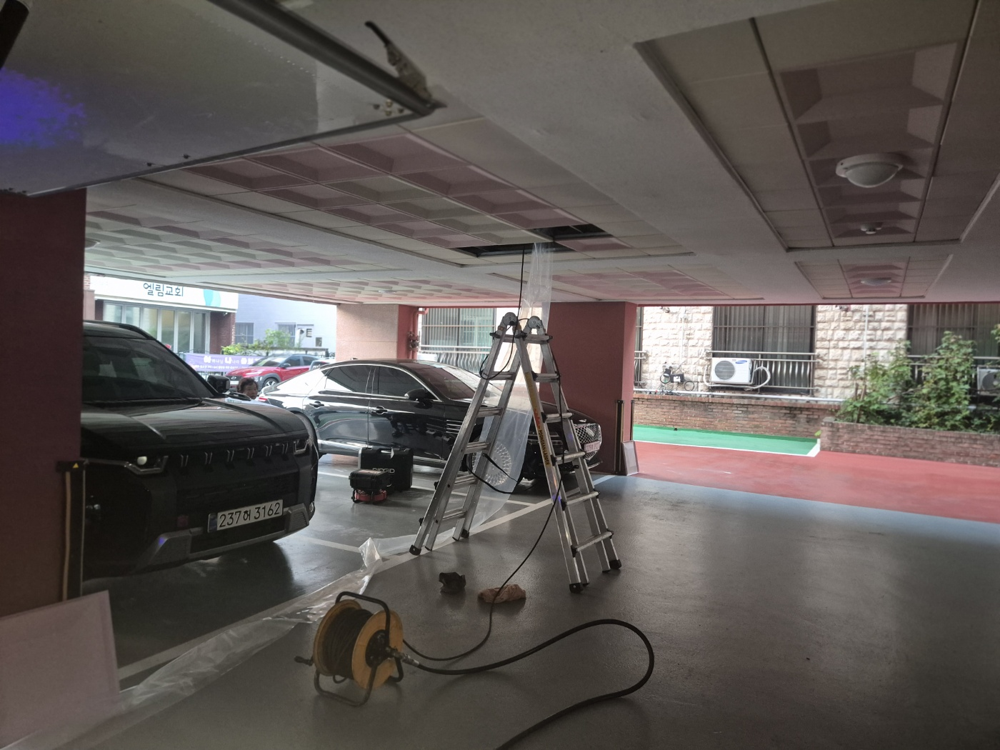
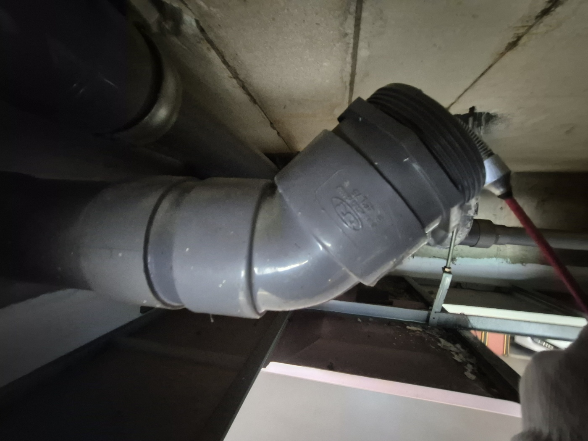
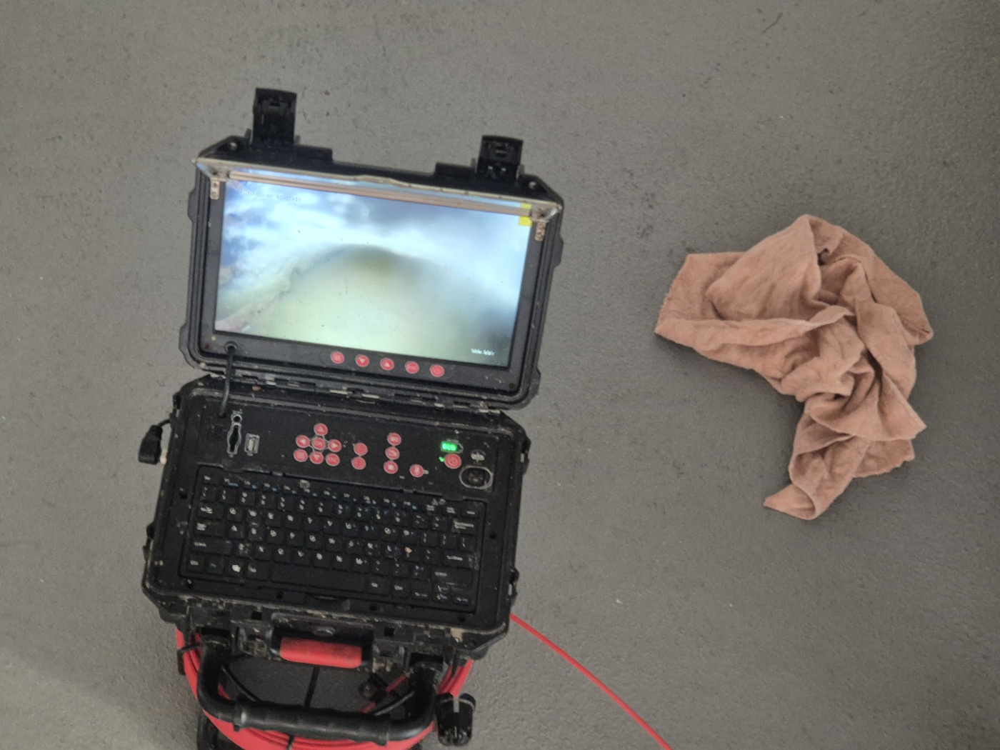
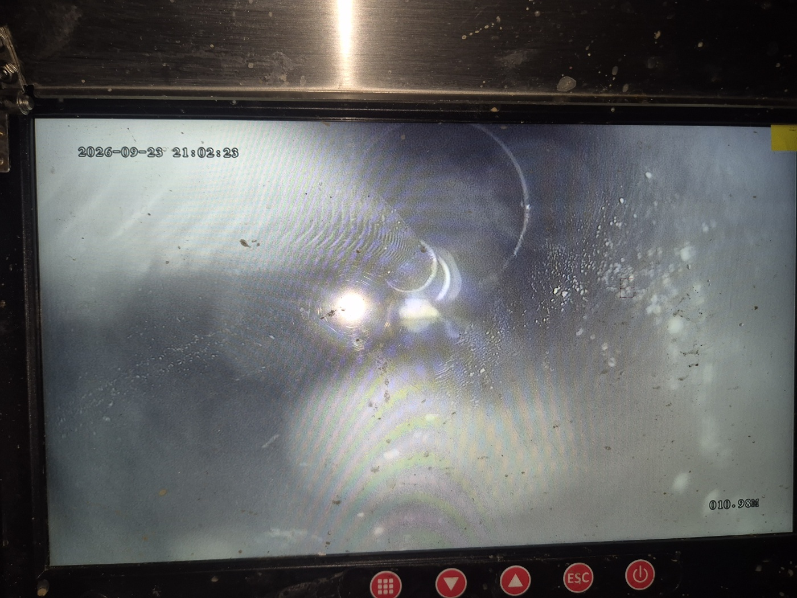
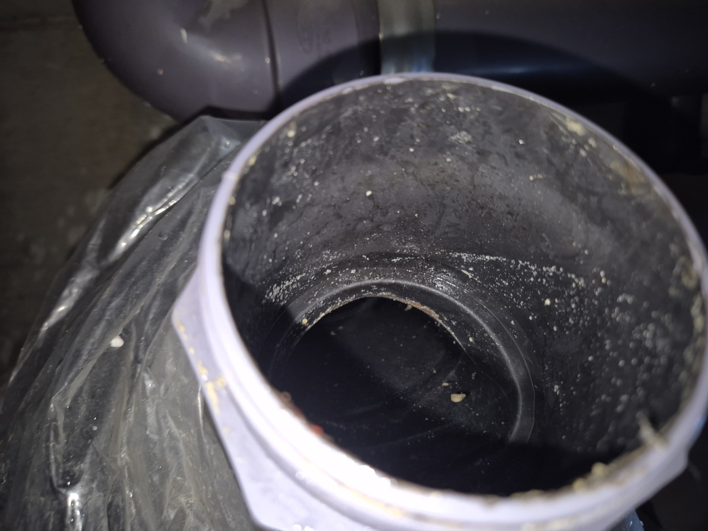
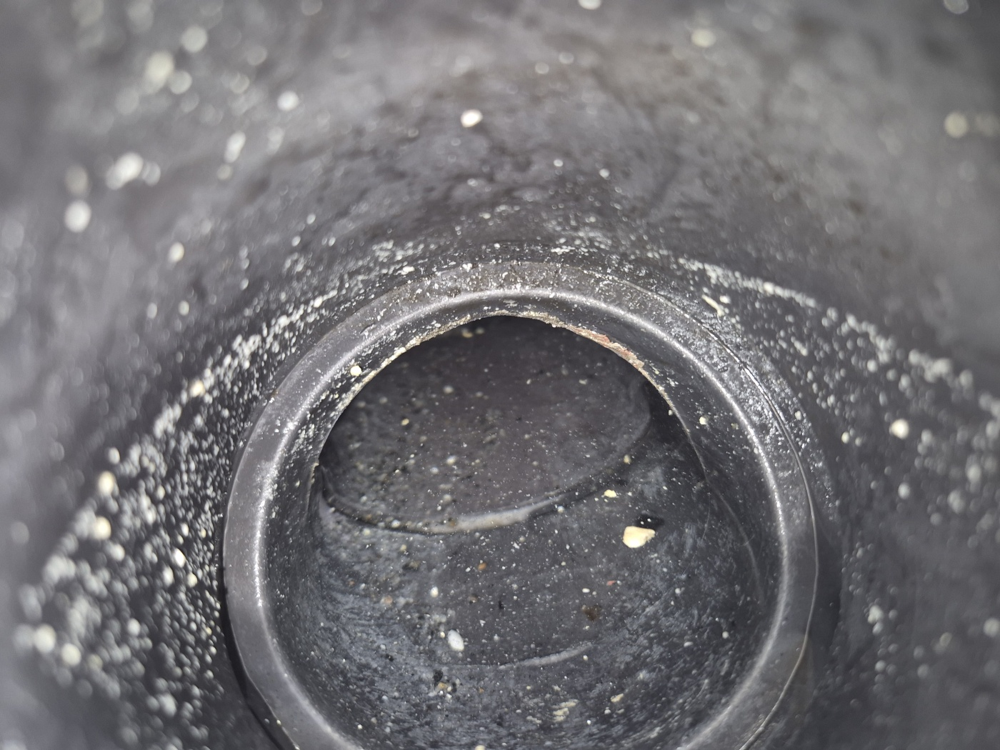

안녕하세요.. 고고고 설비입니다.. 오늘은 천안시 쌍용동에 있는 원룸 건물에서 하수구막힘 신고를 받고 다녀온 현장입니다. 지하주차장 쪽에서 냄새가 올라온다고 하셨어요.
지하주차장으로 내려가 보니 천장 배관이 지나가는 구간에서 문제가 있어 보였습니다. 사다리를 놓고 천장 점검구를 열어 배관 상태부터 확인했어요.

천장 속 배관 연결부를 가까이서 살펴보니 연결 부위가 헐거워진 상태였습니다. 여러 세대의 하수가 지나가는 구간이라 꼼꼼히 점검해야 했어요.

내시경 카메라와 모니터를 바닥에 펼쳐두고 배관 안쪽을 확인할 준비를 했습니다.

카메라를 배관 안쪽 10m 가까이 밀어 넣어 확인해보니 화면이 뿌옇게 흐려질 정도로 이물질이 가득했습니다.

배관을 분리해서 안쪽을 직접 살펴보니 하얗게 굳은 찌든때가 관 벽 전체를 덮고 있었습니다. 여러 세대가 함께 쓰는 배관이라 오랫동안 조금씩 쌓인 것으로 보였어요.


굳은 찌든때를 제거하고 배관을 다시 연결한 뒤 물을 내려서 정상적으로 배수되는 걸 최종 확인했습니다. 원룸처럼 여러 세대가 한 배관을 쓰는 건물은 천장 배관 관리가 특히 중요한 만큼, 냄새나 배수 지연 신호가 있을 때 미리 점검받으시는 걸 권해드립니다.
고고고 설비는 주택, 아파트, 원룸, 상가, 공장의 생활 하수 오수 배관을 관리해 주는 업체입니다. 고고고 설비에 전화 주시면 친절상담 정확한 진단 확실한 해결로 보답해 드리겠습니다!!